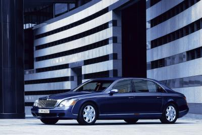

Maybach Guard
A high level of protection encapsulated in luxorious curves

The name Maybach stands out for its unbridled levels in luxury, performance and limitless personalization. And when it comes to passenger protection, we pushed the boundaries even further, reaching a very high level of safety with a factory-made solution.
A Maybach Guard is the answer to the needs of Heads of State or businessmen, looking for discreet protection aboard their saloons during their journeys. This occurs without missing the luxurious environment the passengers are used to enjoy.
The Maybach Guard, just like any other regular Maybach saloon, is constructed from the bottom up as a special version. This vehicle is based on the Maybach 62 model and enables you to choose almost from the complete array of optional features and refinements available for the Maybach 62 model. The protection offered is organically integrated, not tacked on afterwards.
The base of the Maybach Guard was originally designed for the extra weight of the protective armouring so that no changes of drive train, suspensions or breaking-system are necessary. The car handles effortlessly at all times. Further contributions are provided by the electronic control systems such as ESP®, ABS, ASR Brake Assist BAS and AIRMATIC DC. Nor do you have to make any compromises when it comes to performance either: the Maybach Guard accelerates from 0 to 100 km/h in just 5.7 seconds and is the only armoured car in the world able to reach a top speed of 250 km/h.
Upmost care in safety and individualization too
The bodyshell is built in the same production plant in Sindelfingen where all the other Maybach models are built.

After that the special protective features have been integrated, a Maybach Guard moves out onto the standard assembly room. From here our expert craftsmen dedicate their efforts to guarantee the upmost care in the assembly and individualization process, in order to ensure our costumers the same, incomparable levels of craftsmanship that the Maybach name represents.
{kind=link}
Certified protection
As used in the construction of special vehicles and bulletproof clothing, the armour is made of highly specialized steel and high-tech Kevlar.
Thanks to its lightness, while still ensuring a very high protection, the armour raises the total weight of the vehicle by only 406 kg. In order to guarantee effectiveness, the armour is certified by independent state bodies which carry out on-the-spot quality control checks. As the certification can be revoked with the detection of the slightest weakness, rigorously high levels of perfection are continuously maintained.
Luxurious handcrafted details
Another thing you don’t need to fear in a Maybach Guard is your freedom of choice.
{kind=link}
As always, the name Maybach stands for unmatched individuality: exotic wood can be combined with a wide range of sumptuous leathers.
Tailored to your desires
{kind=link}
Our specialists are honoured to be at your disposition and help you realize the Maybach Guard as you desire.
Perhaps you want a monogram made from your initials?
Or champagne flutes made of sterling silver?
Whatever you desire, your Personal Liaison Manager, the Maybach designers and engineers will help you configure your Maybach Guard just the way you want it.